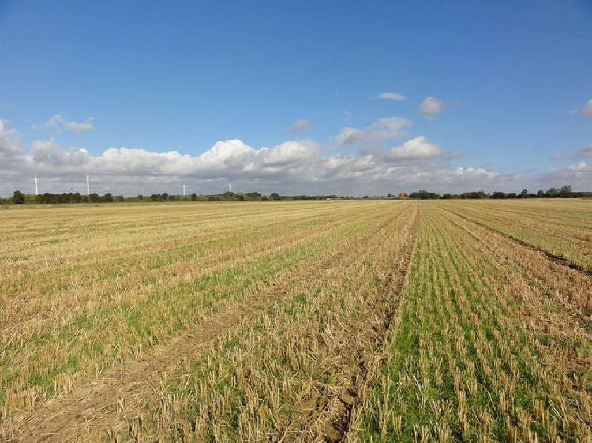

Barbell Strategy and Convexity

Investing Advice from the book "The Black Swan by Nassim Taleb"
Investing Advice from the book "The Black Swan by Nassim Taleb"
It is very unlikely that you are able to pick speculative securities that will make you alot of money before hitting your "Uncle Point", or the point where you can no longer afford to invest. How can you invest money as a retail investor without being about to ensure your portfolio with calls and puts?
"Instead of putting your money into medium risk investments, you need to put a portion, say 85 to 90 percent in extremely safe instruments..."
...what Taleb calls elsewhere a "numaire repository of value". This is composed of assets that have as little volatility as possible and are meant to store value.
Arable land is a store of value that Taleb is very bullish on. Land has the added benefit of being able to produce "soft commodities" such as produce.
Foreign currencies can be considered a hedge against the US Federal Reserve's management of the dollar.

Bullion comes with storage considerations, but can be another good option for storing value. Gold has been used for thousands of years as a repository of value. And precious metals are also a commodity meaning that they have intrinsic value unlike fiat currencies.

"The remaining 10 to 15 percent you put in extremely speculative bets, as leveraged as possible, preferably venture capital-style portfolios...The average will be medium risk but constitutes a positive exposure to the Black Swan."
By only having 10 percent in speculative investments, you have insured yourself from having a fall of more than 10% while leaving a limitless upside.

The reasoning behind this strategy is to allow you to make as many speculative bets as you can without ever having to give up. Rebalance whenever you want, sell some speculative stocks that have made money and buy more into your safe investments. If you lose money on a speculative investment, you can just keep it and make another bet. The result will be a convex curve, dipping at first before shooting up exponentially. Imagine having invested in bitcoin in 2016. Give yourself the ability to not worry about the dips